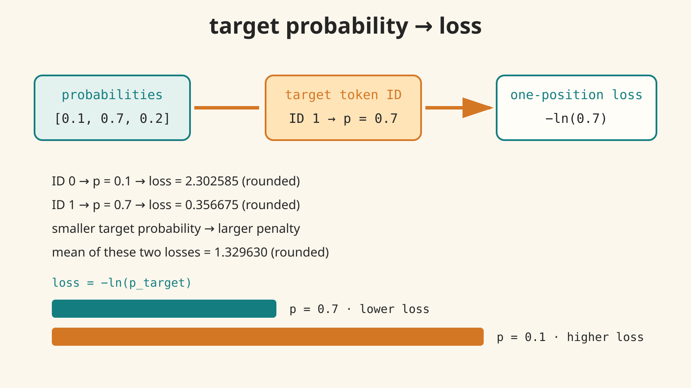

토큰 ID
칸의 번호
타깃 확률 하나를 loss로
softmax가 만든 확률 벡터에서 타깃 토큰 ID가 한 칸을 고르고, loss = -ln(p_target)로 그 선택을 평가해요. 이 페이지의 숫자는 손으로 정한 toy 예시예요.
먼저 구분하기
확률
칸의 값
칸의 값
loss
선택 결과의 벌점
선택 결과의 벌점
확률 벡터 [0.1, 0.7, 0.2]의 합은 1이에요. target ID는 이 벡터에서 정답 칸을 선택하고, target probability는 선택된 값이에요.
직접 바꿔 보기
단일 위치 손실 함수는 정답 확률을 벌점으로 바꿔요. 여러 예의 손실을 줄이는 학습 최적화는 다음 수업에서 다뤄요. exp(x)=e^x는 소프트맥스에서 본 자연 지수 함수이고 ln은 그 역함수예요. ln(1)=0, 0<p<1이면 ln(p)<0이므로 -ln(p)는 양수예요. 평균은 반올림 전 값으로 계산한 뒤 소수 여섯 자리로 표시해요.
loss = -ln(p_target)
선택된 target probability
loss full
loss displayed rounded
probability vector
정확히 두 예의 평균
예 A
ID 1 → p = 0.7
ID 1 → p = 0.7
예 B
ID 0 → p = 0.1
ID 0 → p = 0.1
화면 숫자는 소수 여섯 자리로 반올림해 표시하고, 계산은 full precision으로 수행해요.
핵심 코드 경계
target_probability = probabilities[target_id]
if target_probability <= 0 or target_probability > 1:
reject clearly
loss = -math.log(target_probability)p가 0이면 수학적으로 loss는 양의 무한대로 향해요. 구현은 무한대를 조용히 반환하지 않고 거부해요. 이 toy lab은 학습, gradient, autograd, framework, Transformer inference를 실행하지 않아요.
도식

전이 질문과 답
target probability가 0.2라면 0.7보다 작으므로 loss는 더 커져요. 핵심은 target ID가 고른 확률 하나에 마이너스 자연 로그를 적용하는 거예요.
수업 설명과 코드 내려받기
Python · C++17 · 전체 실습 소스 ZIP
다음 토큰 확률 하나를 cross-entropy loss로 바꾸기
이 수업의 목표
이 수업은 앞선 공개 수업에서 다룬 embedding → logits → softmax 결과를 입력으로 받아요. softmax는 후보 토큰마다 확률을 만들고, 그 확률들의 합은 1이에요. 여기서는 그 결과를 다시 계산하지 않고, 손으로 정한 작은 벡터를 사용해 다음 개념을 연결해요.
- 예측: 후보 다음 토큰들에 나눠 준 확률 전체예요.
- 토큰 ID: 후보 토큰 하나를 가리키는 정수 번호예요. 번호 자체는 확률이 아니에요.
- 타깃 토큰 ID: 정답 다음 토큰을 가리키는 번호예요.
- 타깃 확률: 타깃 토큰 ID로 확률 벡터에서 선택한 한 값이에요.
- 단일 위치 손실 함수: 정답 확률 하나를 벌점 숫자로 바꾸는 규칙이에요. 학습 목표는 여러 예의 손실을 줄이는 것이며 최적화는 다음 수업에서 다뤄요.
- loss: 그 평가 결과인 벌점 숫자예요. 이 lesson에서는 한 위치의 cross-entropy loss를 다뤄요.
핵심 식
한 위치에서 정답 토큰의 확률을 p_target이라고 하면, loss는 다음과 같아요.
loss = -ln(p_target)
ln은 자연 로그예요. 자연 로그는 exp라는 자연 지수 함수의 역함수예요. exp(x)=e^x는 이전 소프트맥스 수업의 자연 지수 함수예요. 그래서 ln(exp(x)) = x가 성립해요. ln(1)=0이고 0<p<1이면 ln(p)<0이므로 앞의 마이너스가 양의 벌점을 만들어요. 타깃 확률이 1에 가까우면 -ln(p_target)는 0에 가까워지고, 확률이 작아질수록 양의 벌점이 커져요.
이 식은 정답을 가리키는 one-hot 목표에서 cross entropy를 전개했을 때, 정답 위치 하나만 남는 경우예요. 여기서는 그 한 위치를 손으로 계산하고, gradient나 업데이트 과정으로 넘어가지 않아요.
고정된 두 예
확률 벡터는 다음과 같이 고정해요.
probabilities = [0.1, 0.7, 0.2]
세 값의 합은 1이에요. 후보 토큰 ID는 0, 1, 2이고, 인덱스와 확률은 다른 개념이에요.
예 1: 타깃 토큰 ID 1
ID 1은 두 번째 값 0.7을 선택해요.
loss_A = -ln(0.7) = 0.356674943938732 (소수 15자리 출력)
화면과 표준 출력은 읽기 쉽게 소수 여섯 자리로 반올림한 0.356675도 보여 줘요. 반올림값을 정확한 내부 계산값이라고 부르지 않아요.
예 2: 타깃 토큰 ID 0
ID 0은 첫 번째 값 0.1을 선택해요.
loss_B = -ln(0.1) = 2.302585092994045 (소수 15자리 출력)
따라서 더 작은 타깃 확률 0.1이 더 큰 loss를 만들어요. 이것이 loss가 작은 확률에 더 강한 벌점을 주는 이유예요.
두 예의 평균
이번에는 지정한 두 예만 평균 내요.
mean_loss = (loss_A + loss_B) / 2
mean_loss = 1.329630018466389 (소수 15자리 출력)
평균은 trace의 반올림 전 두 손실로 계산해요. 긴 출력값 역시 소수 15자리 출력이며 수학적 정확값은 아니에요. 표시값은 소수 여섯 자리 1.329630이에요.
코드의 안전한 경계
canonical.py와 canonical.cpp는 타깃 ID로 값을 고른 뒤, 타깃 확률이 0 < p_target <= 1인지 검사해요.
p_target = 0은 수학적으로 loss가+infinity로 향하는 극한이에요. 구현은 무한대를 조용히 반환하지 않고 거부해요.p_target < 0도 거부해요.p_target > 1도 거부해요.- 벡터 범위를 벗어난 타깃 ID도 거부해요.
두 구현은 같은 고정 출력 계약을 사용하고 stdout이 byte-for-byte로 일치하도록 테스트해요. 내부 trace에는 full precision 값을 보존하고, 표시는 별도로 반올림해요.
이 lesson이 하지 않는 것
확률은 hand-set toy 값이에요. 이 패키지는 모델을 학습하지 않고, gradient를 계산하지 않고, autograd나 framework를 사용하지 않아요. Transformer를 실행하거나 실제 서비스의 next-token inference를 재현한다고 주장하지도 않아요. 목표는 타깃 ID가 확률 하나를 선택하고, -ln이 그 선택을 loss로 바꾸는 숫자 규칙을 분명히 익히는 거예요.
직접 확인할 질문
- 타깃 확률이
0.1과0.7중 어느 쪽일 때 loss가 더 클까요? - 새 타깃 확률이
0.2라면0.7과 비교해 loss는 더 클까요, 더 작을까요?
정답은 둘 다 더 작은 타깃 확률 쪽의 loss가 더 크다는 거예요.